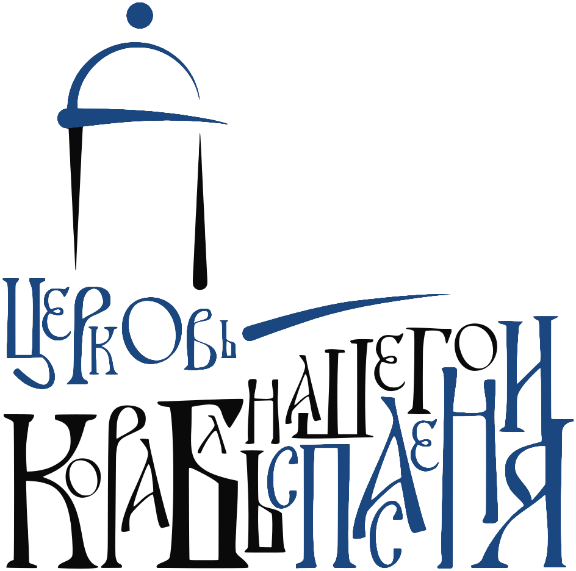

Храм-часовня во имя св. великомученика Георгия Победоносца
Это первый опыт арт-кластера «Таврида» по строительству культовых сооружений.
Инвестиционный проект реализуется силами мецената-храмостроителя Алексея Кахидзе при поддержке «Тавриды» и Синодального отдела по делам молодёжи РПЦ.
Новости
Богослужения
Всё расписание
Ближайшие дни
ПроситеИщитеСтучите
«Просите, и дано будет вам; ищите, и найдёте; стучите, и отворят вам» — Мф. 7:7
О часовне
Подробнее о часовне
Церковь — корабль нашего спасения
Храм-часовня стоит на берегу бухты Капсель, на территории арт-кластера «Таврида». Её строили и украшали сами участники кластера: архитекторы, художники, мастера и волонтёры.
Знак часовни собран из букв фирменного шрифта: в нём — образ святого Георгия Победоносца, хризма и омега в виде поверженного змея — символ того, что злу пришёл конец.
2024освящение и первая литургия
2025завершено внутреннее убранство
9 декпрестольный праздник
Посещение
Как нас найти
Адрес
Республика Крым, г. Судак, бухта Капсель, арт-кластер «Таврида».
Часовня открыта для посещения ежедневно с 8:00 до 19:00.
Открыть на картеПосетителям
- Женщинам — в юбке и с покрытой головой; платки можно взять у входа.
- Мужчинам — без головного убора, в брюках.
- Записки о здравии и упокоении принимаются до начала богослужения.
- Крещение, венчание и другие требы — по предварительной договорённости со священником.